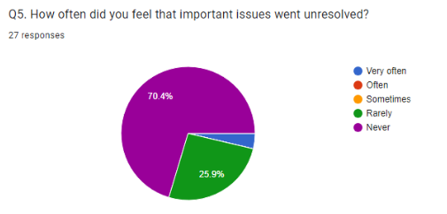
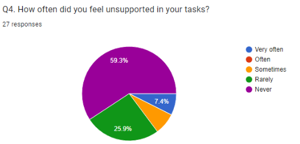

Hi, I'm Shiva Kumar, currently pursuing a Diploma at IITM and a B.Tech from CMR Technical Campus, Hyderabad. I have been actively involved in various student activities and leadership roles. I served as a Group Leader at IITM for the year 2023-24 and also as a City Coordinator for Hyderabad at Boundless Society.
I am passionate about leadership and organizing events. My strengths include strong leadership skills, excellent organizational abilities, and a collaborative mindset. I am committed to enhancing the student experience and fostering a sense of community within Kaziranga House.
Goals
Conduct regular open house meets to facilitate open communication and address student concerns directly.
Initiate and support the formation of various clubs under Kaziranga House to cater to diverse student interests and passions.
Create opportunities for students to collaborate and participate in events like Hacktoberfest, hackathons, and other inter-house competitions.
Revitalize the web-admin role within Kaziranga House and develop a dynamic website to keep students informed and engaged.
Enhance communication channels between students and the administration to ensure transparency and timely updates.
Why Vote for Me?
Choosing the right candidate is crucial for the success of Kaziranga House. Here's why I believe I am the best choice for Deputy Secretary:
Proven leadership experience, having served as a Group Leader at IITM and a City Coordinator for Hyderabad at Boundless Society.
Strong organizational skills, demonstrated through my experience in organizing events and managing teams.
Collaborative mindset, valuing teamwork and fostering a sense of community.
Commitment to improving communication channels to ensure that every student's voice is heard and addressed.
Vision for growth, with a clear plan to enhance the student experience through innovative projects and initiatives.
Feedback from Past Group Members:
Here are the results from a feedback survey I conducted with my past group members:


Here are some of the comments I received from my past group members:
”Your ability to inspire and engage others was the most effective aspect of your leadership.”
"The ability to be available and provide information to your best knowledge whenever requested"
"Continuous involvement with group members, raising their concerns to right place and orienting the new students to the right direction"
Get in Touch
I'd love to hear from you! Whether you have questions, suggestions, or just want to chat, feel free to reach out.